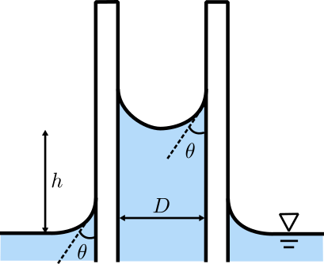

Capillary rise in a circular tube
\( \displaystyle h = \frac{2\sigma \cos\theta}{\rho g r}
\;=\; \frac{4\sigma \cos\theta}{\rho g D} \)
Symbols
- \(h\) — capillary rise (+) or depression (−) (m)
- \(\sigma\) — surface tension (N·m\(^{-1}\))
- \(\theta\) — static contact angle (°), measured in the liquid
- \(\rho\) — liquid density (kg·m\(^{-3}\))
- \(r\), \(D\) — tube radius, inner diameter (m), with \(D=2r\)

Inputs
Pick a preset to lock \( \theta,\sigma,\rho \). Choose Custom… to edit them.
Plot range: 0.20–2.00 mm. Use the slider or drag the red dot.
h (m)
—
h (mm)
—
\(g = 9.81\ \mathrm{m/s^2}\). With smaller \(D\), \(h\) grows like \(1/D\).
This tool uses \( h = \tfrac{4\sigma\cos\theta}{\rho g D} \) for circular tubes with \( D = 2r \).
Choose a preset (or Custom…) and explore diameters from 0.20–2.00 mm.